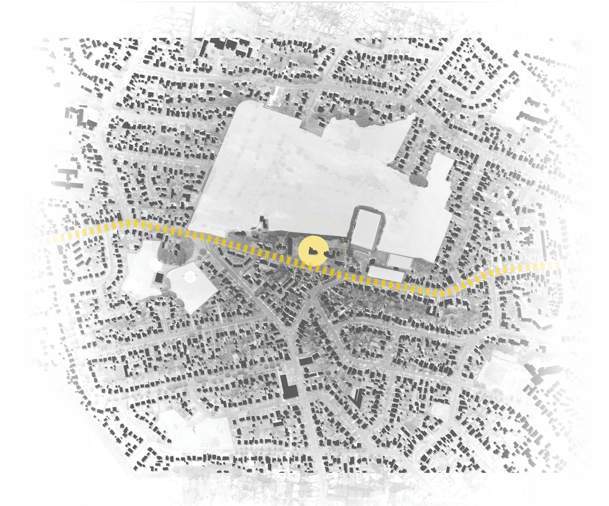

Project Goals
Part Five
- Understanding the role of the church towards a secular community.
- Improving the spatial transition between exterior and interior of the church spaces.
- Explore the designers' role in participatory design approach to promote community engagement, via online engagement and physical engagement.
- Redesign the churchyard to create an inviting space to attract the surrounding community.